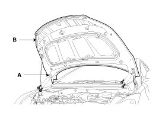
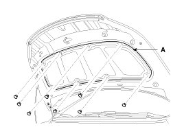
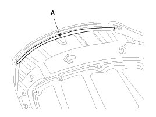
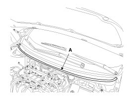
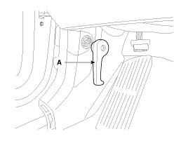
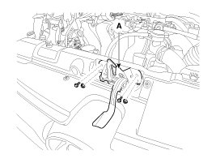
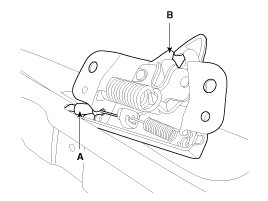
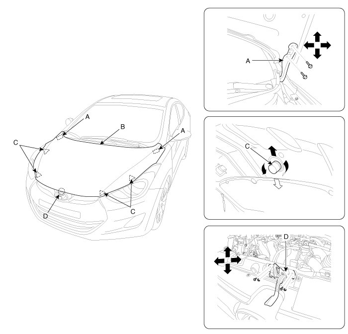

Hood: Service and Repair
Replacement
Hood Assembly Replacement
CAUTION:
- When removing and installing the hood, an assistant is necessary.
- Be careful not to damage the hood and body.
- When removing the clips, use a clip remover.
1. After loosening the hood hinge (A) mounting bolts, remove the hood panel (B).
Tightening torque :
21.6 - 26.5 N.m (2.2 - 2.7 kgf.m, 15.9 - 19.5 lb-ft)

2. Installation is the reverse of removal.
NOTE:
- Make sure the hood locks/unlocks and opens/closes properly.
- Adjust the hood alignment.
Hood Insulator Pad Replacement
1. Using a clip remover, detach the clips, and remove the hood insulator pad (A).
CAUTION:
- Be careful not to scratch the hood panel.

2. Installation is the reverse of removal.
NOTE:
- Replace any damaged clips.
Hood Seal Weatherstrip Replacement
1. Detach the clips, then remove the hood seal weatherstrip (A).
CAUTION:
- Be careful not to scratch the hood seal weatherstrip.

2. Installation is the reverse of removal.
NOTE:
- Replace any damaged clips.
Hood Weatherstrip Replacement
1. Remove the hood weatherstrip (A).

2. Installation is the reverse of removal.
Hood Release Handle Replacement
1. Using a screwdriver or remover, remove the hood release handle (A).

2. Installation is the reverse of removal.
NOTE:
- Make sure the hood latch cable is connected properly.
- Make sure the hood locks/unlocks and opens/closes properly.
Hood Latch Replacement
1. Remove the hood latch (A) mounting bolts, nuts.
Tightening torque :
7.8 - 11.8N.m (0.8 - 1.2kgf.m, 5.8 - 8.7 lb-ft)

2. Disconnect the hood latch cable (A) and remove the hood latch (B).

3. Installation is the reverse of removal.
NOTE:
- Make sure the hood latch release cable is connected properly.
- Make sure the hood locks/unlocks and opens/closes properly.
- Adjust the latch alignment.
Adjustment
Adjust Hood
1. After loosening the hinge (A) mounting bolt, adjust the hood (B) by moving it up or down, or right or left.
2. Adjust the hood height by turning the hood overslam bumpers (C).
3. After loosening the hood latch (D) mounting bolts, adjust the latch by moving it up or down, or right or left.
